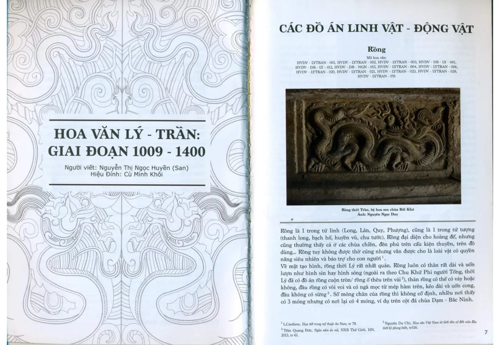
CÁC ĐỒ ÁN LINH VẬT - ĐỘNG VẬT
Rông
_Mã hoa văn:
'HVDV - YTI { -020, HVD V - LYTRAN - HVDV - LYTRAN - 023, - LYTRAN - 028,
_HVDV - LYTRAN - 051.
HOA VĂN LÝ - TRÂN:
GLAI ĐOAN 1009 - 1400
Người viết: Nguyễn Thị Ngọc Huyền (San)
Hiệu Đính: Cù Minh Khôi.
Rồng thời Trần, bệ hoa +
Ảnh: Nguyên Ngọc Duy
sen chùa Bối Khê
Rông là I trong tứ linh (Long, Lân, Quy, Phượng), cũng là trong tứ tượng
(thanh long, bạch hổ, huyền vũ, chu tước). Röng đại diện cho hoàng đế, nhưng
Rồng tuy không được thờ cúng nhưng vẫn được cho là loài vật có quyên
năng siêu nhiên và bảo trợ cho
lượn như hình sin ha › Chu Khứ Phi người Tống, thời
Lý đã có đồ án rồng cuộn { ổ thêu trên vải 2), thân rồng có thể có vảy hoặc
không, đâu rồng có vời voi và có ngà mọc từ mép hàm trên, kéo dài và uốn cong,
LCardiere, Họa tiết trong mỹ thuật An Nam, tr T9.
Trần Quang Đức, Ngàn năm ứ mũ, NXB Thế Giới, HN,
Ÿ Nguyên Du Chỉ, Hoa văn Việt Nam
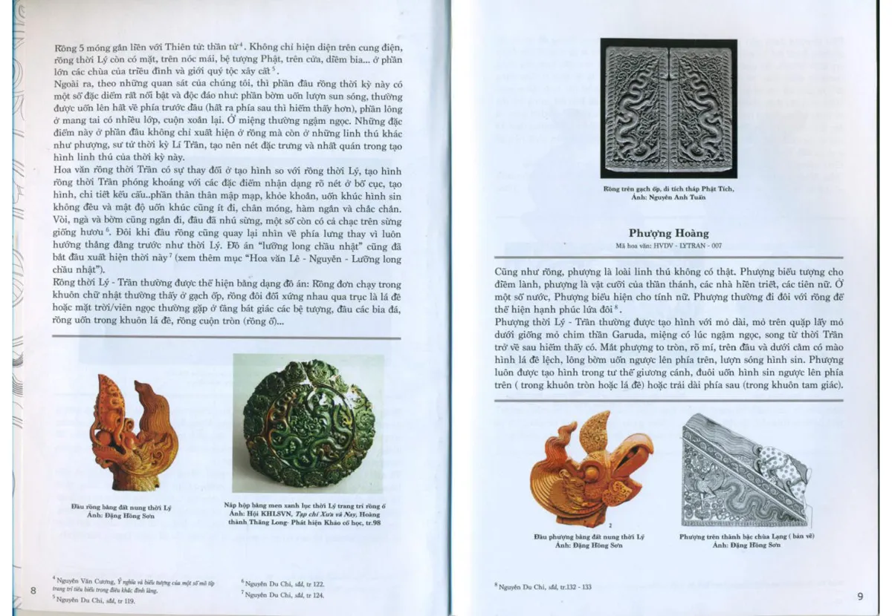
Rồng 5 móng gân liền với Thiên tử: thần tử”. Không chỉ hiện diện trên cung điện,
rồng thời Lý còn có mặt, trên nóc mái, bệ tượng Phật, trên cửa, diềm bia... ở phần
lớn các chùa của triều đình và giới quý tộc xây cất
điểm này ở phần đâu không chỉ xuất hiện ở rồng mà còn ở những linh thú khác
hình linh thú của thời kỳ này.
Hoa văn rồng thời Trần có. sự thay đổi ở tạo hình SO với rồng thời Lý, tạo hình
hình, chỉ tiết kếu cấu..phần thân thân mập mập, khỏe khoắn, ấn khúc. hình sín Rồng trên gạch ốp, di tích tháp Phật Tích,
không đều và mật độ uốn khúc cũng ít đi, chân móng, hằm ngắn Xà diệt chân.
Ảnh: Nguyên Anh Tuấn
Vòi, ngà và bờm m cũng ngắn đi, đâu đã nhú sừng, một số còn có cả chạc trên sừng
Phượng Hoàng
Mã hoa văn: HVDV - IYTRAN - 007
bắt đầu xuất hiện thời này ” (xem thêm mục “Hoa văn Lâ - Nguyễn - Lưỡng long
châu nhật”). Cũng như rồng, phượng là loài linh thú không có thật. Phượng biểu tượng cho
điềm lành, phượng là vật cưỡi của thân thánh, các nhà hiền triết, các tiên nữ. Ở
một số nước, Phượng biểu hiện cho tính nữ. Phượng thường đi đôi với rồng để
hoặc mặt trời/viên ngọc. thường gặp ở tầng bắt giác các bệ tượng, đầu các bìa đá, thể hiện hạnh phúc lứa đôi 5.
rông uốn trong khuôn lá đề, rồng cuộn tròn (rồng ỡ)... Phượng thời Lý £ Trân thường được tạo hình với mỏ dài, mỏ trên quặp lấy mỏ
dưới giống mỏ chim thần Garuda, miệng có lúc ngậm ngọc, song từ thời Trân
hình lá đề lệch, lông bờm uốn ngược lên phía trên, lượn sóng hình sin. Phượng
trở về sau hiếm thấy có. Mắt phượng to tròn, rõ mí, trên đâu và dưới cảm có mào
luôn được tạo hình trong tư thế giương cánh, đuôi uốn hình sin ngược lên phía
trên ( trong khuôn tròn hoặc lá đê) hoặc trải dài phía sau (trong khuôn tam giác).
Ảnh: Đặng Hồng Sơn `
Đâu phượng bằng đất nung thời Lý
_ Ảnh: Đặng Hồng Sơn.
Phượng trên thành bậc chùa Lạng ( bản vẽ)
_Ảnh: Đặng Hồng Sơn
Nguyên Văn Cương, Ý ngiia nà biểu tượng của, ® Nguyên Du Chí, tr 122.
trang tr iê biểu trong điệu Đúc Ï Nguyễn Du Chỉ, tr 124,
Ê Nguyễn Du Chỉ, tr.l32 - 133
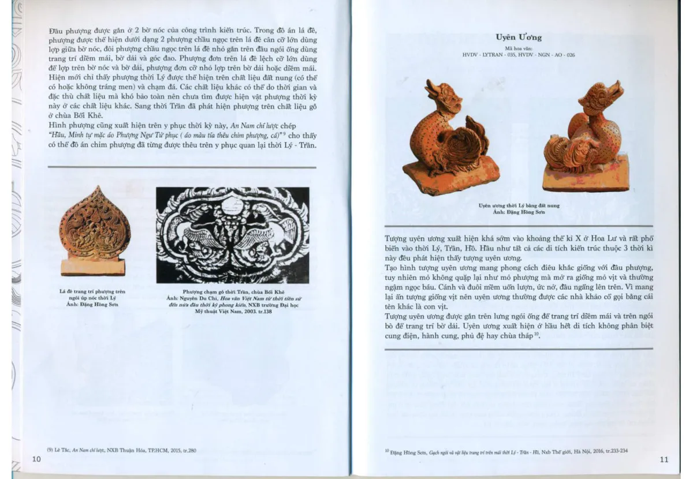
Uyên Ương
HVDV - LYTRAN - 035, HVDV - NGN - AO - 026
để lợp trên bờ nóc và bờ đải, phượng đơn cỡ nhỏ lợp trên bờ dải hoặc diêm mái.
có hoặc không tráng men) và chạm đá. Các chất liệu khác có thể do thời gian và
Hiện mới chỉ thấy phượng thời Lý được thể hiện trên chất liệu đất nung (có thể
này ở các chất liệu khác. Sang thời Trân đã phát hiện phượng trên chất liệu gỗ
Hình phượng cũng xuất hiện trên y phục thời kỳ này, An Nam chí lược chép
ở chùa Bối Khê.
“Hầu, Minh tự mặc áo Phượng Ngư Tử phục ( áo mầu tía thêu chim phượng, cho thấy
có thể đô án chim phượng đã từng được thêu trên y phục quan lại thời Lý - Trân.
Ảnh: Đặng Hồng Sơn.
Tượng uyên ương xuất hiện khá sớm vào khoảng thế kỉ Xở Hoa Lư và rất phổ
biến vào thời Lý, Trân, Hồ. Hâu như tất cả các di tích kiến trúc thuộc 3 thời kì
Tạo hình tượng uyên ương mang phong cách điêu khắc giống với đâu phượng,
này đều phát hiện thấy tượng uyên ương.
tuy nhiên mỏ không quặp lại như mỏ phượng mà mở ra giống mỏ vịt và thường
_ Phượng chạm gỏ thời Trân, chùa Bối Khẻ_
Lá đề trang trí phượng trên
ngậm ngọc báu. Cánh và đuôi mềm uốn lượn, ức nở, đâu ngẩng lên trên. mang
Ảnh: Đặng Hồng Sơn đến nửa đầu thời kỳ phong kiến, NXB trường Đại học tên khác là con vịt.
Tượng uyên ương được gần trên lưng ngói ống để trang trí diêm mái và trên ngói
bồ để trang trí bờ dải. Uyên ương xuất hiện ở hầu hết di tích không phân biệt
cung điện, hành cung, phủ đệ hay chùa tháp
(9) Lê Tắc, An Nam chí lượt, NXB Thuận Hóa, TP.HCM, 2015, tr.280
10 11
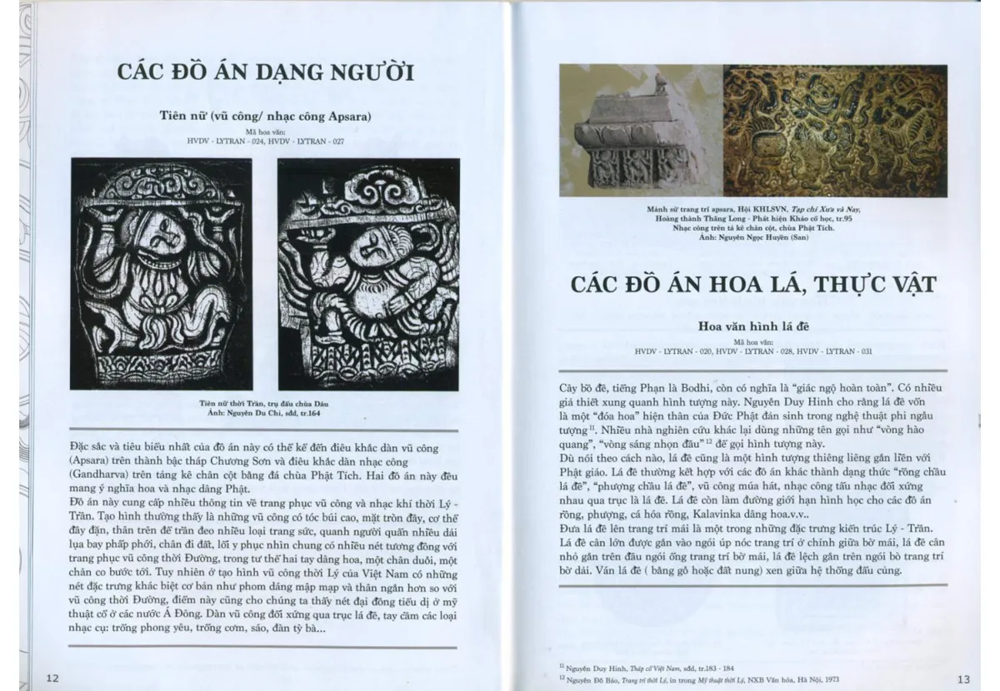
CÁC ĐỒ ẤN DẠNG NGƯỜI
Tiên nữ (vũ công/ nhạc công Apsara)
HVDV - LYTRAN - 024, HVDV - LYTRAN - 027
_Mã hoa văn:
Ảnh: Nguyễn Ngọc Huyền (San).
CÁC ĐỒ ÁN HOA LÁ, THỰC VẬT
Hoa văn hình lá đê
HVDV - - 020, HVDV - LYTRAN - 028, HVDV - LYTRAN - 031
_Mã hoa văn:
Cây bồ đê, tiếng Phạn là Bodhi, còn có nghĩa là “giác ngộ hoàn toàn”. Có nhiêu
Tiên nữ thời Trần, trụ đấu chùa Dầu giả thiết xung quanh hình tượng này. Nguyễn Duy Hinh cho rằng lá đê vốn
_Ảnh: Nguyễn Du Chỉ, sđd,
tượng Nhiều nhà nghiên cứu khác lại dùng những tên gọi như “vòng hào
Đặc sắc và tiêu biểu nhất của đồ án này có thể kế đến điêu dàn vũ công quang”, “vòng sáng nhọn đâu” ' để gọi hình tượng này.
Dù nói theo cách nào, lá đê cũng là một hình tượng thiêng liêng gắn liên với
(Gandharva) trên tảng kê chân cột bằng đá chùa. Phật Tích. Hai đô án này đêu Phật giáo. Lá đề thường kết hợp với các đô án khác. thành dạng thức “rông chầu
lá đê”, “phượng châu lá đê”, :
mang ý nghĩa hoa và nhạc dâng Phật vũ công múa hát, nhạc công tấu nhạc đối xứng
cấp nhiều thông tin về trang phục vũ công và nhạc khí thời Lý -
nhau qua trục là lá đề. Lá đê còn làm đường giới hạn hình học cho các đô án
những vũ công có tóc búi cao, mặt tròn đây, cơ thể rồng, phượng, cá hóa rồng, Kalavinka dâng hoa.v.v..
trang SỨC, quanh người quấn nhiều dải
đây đặn, thân trên để Đưa lá đề lên trang trí mái là một trong những đặc trưng kiến trúc Lý : Trần.
lụa bay phấp phới, chân đi đất, lối y phục nhìn chung có nhiều nét tương đông với Lá đê cân lớn được gắn vào ngói úp nóc trang trí ở chính giữa bờ mái, lá đê cân
bờ dải. Ván lá đê ( bằng gỗ hoặc đất nung) xen giữa hệ thống đấu củng.
nhỏ gần trên đâu ngói ống trang trí bờ mái, lá đề lệch gần trên ngói bò trang trí
vũ công thời Đường, điểm này cũng cho chúng ta thấy nét đại đông tiểu dị ở mỹ
nhạc cụ: trống phong yêu, trống cơm, sáO, đàn tỳ bà...
12
Nguyên Duy Hinh, Tháp cổ Việt Nam, sđd, tr.183 - 184
Nguyên Đồ Báo, Trang tí Hời Lý, Ín trong Mỹ thuật ời Lý, NKB Văn hóa, Hà Nội, 1973 13
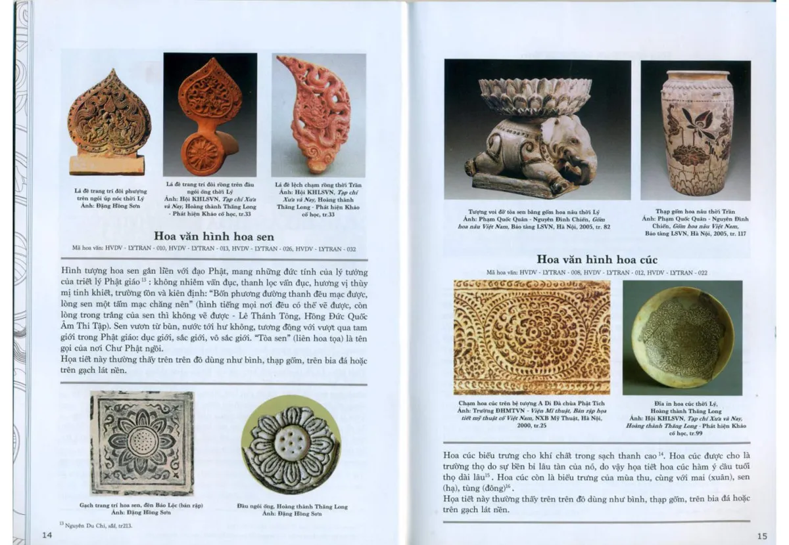
Lá đề trang trí đôi rồng trên đâu
Lá đề trang trí đôi phượng
Lá đề lệch chạm rồng thời Trần
Ảnh: Đặng Hồng Sơn
- Phát hiện Khảo cổ học, tr.33. cổ học, tr.33
: Thạp gốm hoa nâu thời Trân.
hoa nâu Việt Nam, Bảo tàng LSVN, Hà Nội, 2005, tr. 82 Bảo tàng LSVN, Hà Nội, 2005, tr. 17
Hoa văn hình hoa sen
Mã hoa văn: HVDV - LYTRAN - 010, HVDV - IYTRAN - 013, HVDV - IYTRAN - 026, HVDV - EYTRAN - 032
Hoa văn hình hoa cúc
HVDV - LYTRAN - 008, HVDV - LYTRAN - 012, HVDV - LYTRAN - 022
lòng sen một tấm mạc chăng nên” (hình tiếng mọi nơi đều có thể vẽ được, còn
lòng trong trắng của sen thì không vẽ được ~ Lê Thánh Tông, Hồng Đức
Âm Thi Tập). Sen vươn từ bàn, nước tới hư không, tương đông với vượt qua tam
giới trong Phật giáo: dục giới, sắc giới, vô sắc giới. “Tòa sen” (liên hoa tọa) là tên
gọi của nơi Chư Phật. ngồi.
Họa tiết này thường thấy trên trên đồ dùng như bình, thạp gốm, trên bia đá hoặc
trên gạch lát
Chạm hoa cúc trên bệ tượng A Di Đà chùa Phật Tích _Đĩa in hoa cúc thời Lý,
Hoàng thành Thăng Long - Phát hiện Khảo
Hoa cúc: biểu trưng cho khí chất trong sạch thanh cao 1, Hoa cúc được “cho là
trường thọ do sự bền bỉ lâu tàn của nó, do vậy họa tiết hoa cúc hàm ý cầu tuổi
thọ dài lâu5, Hoa cúc còn là biểu trưng của mùa thu, cùng với mai (xuân), sen
Họa tiết này thường thấy trên trên đô dùng như bình, thạp gốm, trên bia đá hoặc
(hạ), tùng
& sen, đền Bảo Lộc (bản rập)
Gạch trang trí hoa s Đầu ngồi ống, Hoàng thành Thăng Long
Ảnh: Đặng Hồng Sơn. Đặng Hồng Sơn ` trên gạch lát nền.
]Š Nguyên Du Chí, sđ4, tr213.
14 15
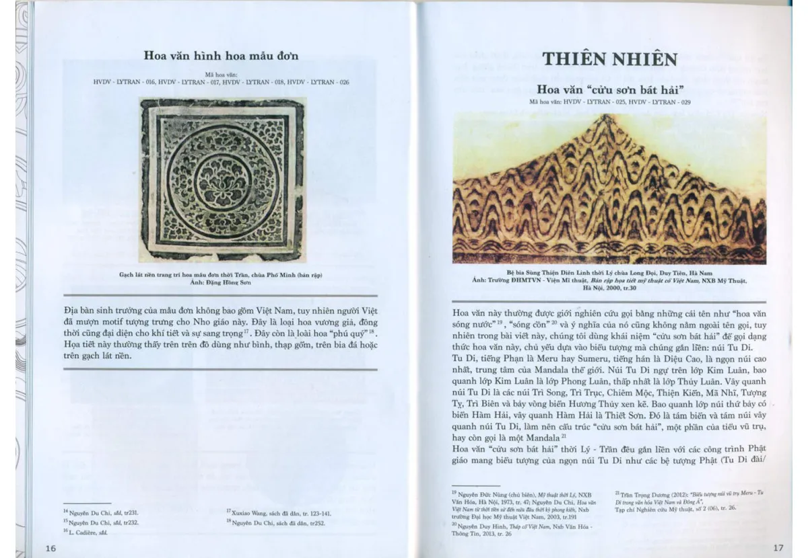
Hoa văn hình hoa mẫu đơn THIÊN NHIÊN
HVDV - [YTRAN - 016, HVDV - LYTRAN - 017, HVDV - LYTRAN - 018, HVDV - LYTRAN - 026
Hoa văn “cửu sơn bất hải”
Mã hoa văn: HVDV - LYTRAN - 025, HVDV - LYTRAN - 029
Gạch lất r iu đơn thời Trần, chùa Phố Minh (bản rập) Bệ bia Sùng Thiện Diên Linh thời Lý chùa Long Đọi, Duy Tiên, Hà Nam
Hà Nội, 2000, tr.30
Địa bàn sinh trưởng của mẫu đơn không bao gồm Việt Nam, tuy nhiên người Việt Hoa văn này thường được giới nghiên cứu gọi bảng những cái tên như “hoa văn
đã mượn motif tượng trưng cho Nho giáo này. Đây là loại hoa vương giả, đông
nhiên trong bài viết này, chúng tôi dùng khái niệm “cửu sơn bát hải” để gọi dạng
Họa tiết này thường thấy trên trên đồ dùng như bình, thạp gốm, trên bia đá hoặc thức hoa văn này, chủ yếu dựa vào biểu tượng mà chúng gắn liên: núi Tu Di.
trên gạch lát Tu Di, tiếng Phạn là Meru h: : hán là Diệu Cao, là ngọn núi cao
nhất, trung ự trên lớp Kim Luân, bao
nhất là lớp Thủy Luân. Vây quanh
Thiện Kiến, Mã Nhĩ, Tượng
Ty, Trì Biên và bảy vòng lớp núi thứ bảy có
biển Hàm Hải, vây quanh Hàm Hải là Thiết Sơn. Đó là tám biển và tám núi vây
c “cửu sơn bát hải”, một phần của tiểu vũ trụ,
hay còn gọi là một Mandala
Hoa văn “cửu sơn bát hải” thời Lý. Trân đều gắn liền với các công. trình Phật
Wang, sách đã dân, tr. 123-141.
Nguyên Du Chí, sách đã dân, tr252.
16
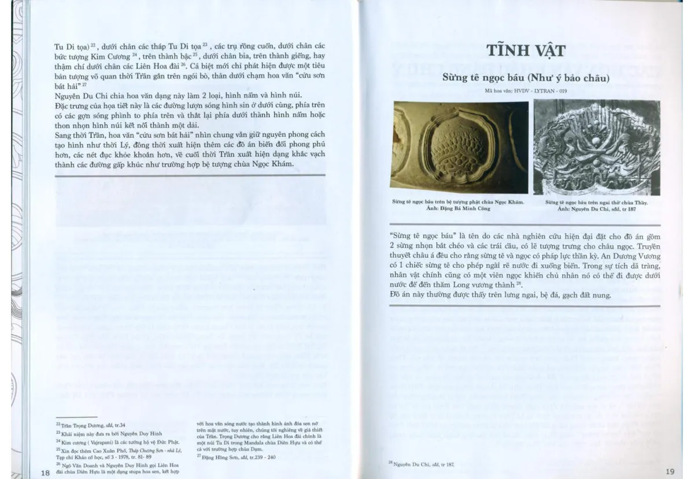
Tu Di tọa)”, dưới chân các tháp Tu Di tọa`, các trụ rồng cuốn, dưới chân các TĨNH VẬT
bức tượng Kim Cương ?*, trên thành bậc Z, dưới chân bia, trên thành giếng, hay
thậm chí dưới chân các Liên Hoa đài *. Cá biệt mới chỉ phát hiện được một tiêu
bản tượng võ quan thời Trân gắn trên ngói bò, thân dưới chạm hoa văn “cửu sơn Sừng tê ngọc báu (Như ý bảo châu)
Nguyễn Du Chỉ chia hoa văn dạng này làm 2 loại, hình nấm và hình núi. Mã hoa văn: HVDV - LYTRAN - 019
có các 'gợn sóng phình tò phía trên và thắt lại phía dưới thành hình nấm hoặc
thon nhọn hình núi kết nối thành một dải.
hơn, các nét đục khỏe khoản hơn, về cuối thời Trân xuất hiện dạng khắc vạch
thành các đường gấp khúc như trường hợp bệ tượng chùa Ngọc Khám.
Sừng tê ngọc báu trên bệ tượng phật chùa Ngọc Khám.
Ảnh: Nguyên Du Chị, tr 187
sừng nhọn bắt chéo và các trái cầu, có lẽ tượng trưng cho châu ngọc. Truyền
có chiếc sừng tê cho phép ngài rẽ nước đi xuống biển. Trong sự tích đã tràng,
nhân vật chính cũng có một viên ngọc khiến chủ nhân nó 'có thể đi được dưới
nước để đến thăm Long vương
Đồ án này thường được thấy trên lưng ngai, bệ đá, gạch đất nung.
Trần Trọng Dương, tr.34 với hoa văn sóng nước tạo thành hình ảnh đóa sen nở.
Kim cương ( Vjrapani) là các tướng hộ vệ Đức Phật.
Đặng Hồng Sơn, si, tr.239 - 240
Tạp chí Kháo cổ học, sỡ 3 - 1978, tr, BI- 89 _ cá với trường hợp chùa Dạm.
Nguyễn Du Chị, tr 187.
19
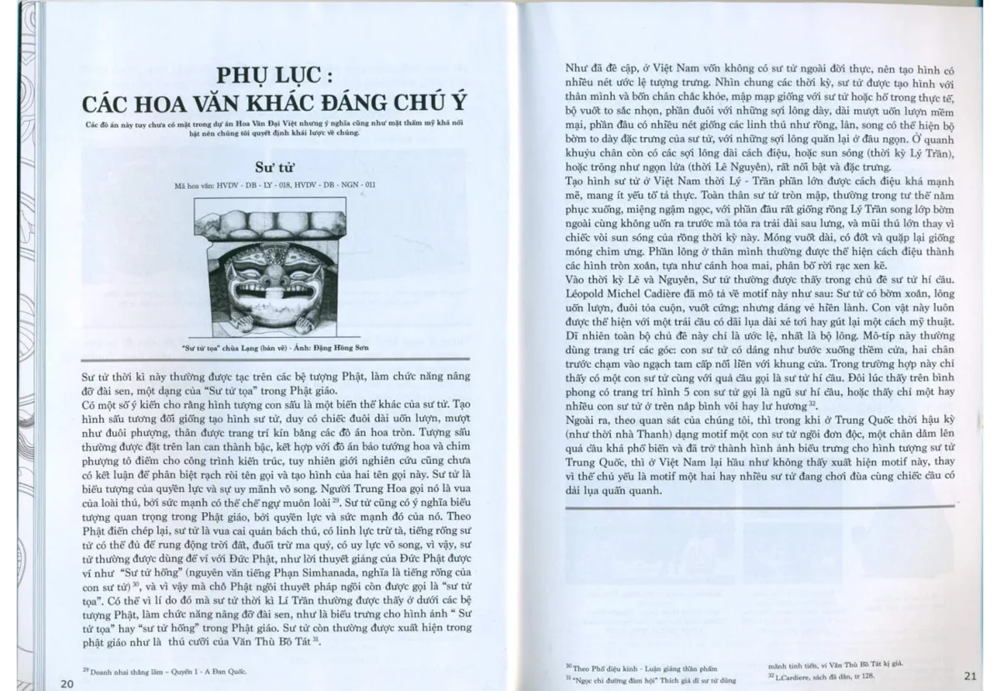
PHU LỤC : Như đã đề cập, ở Việt Nam vốn không có sư tử ngoài đời thực, nên tạo. hình có
CÁC HOA VĂN KHÁC ĐÁNG CHÚ Ý thân mình và bốn chân chắc khỏe, mập mạp giống với sư tử hoặc hỡ trong thực tế,
_ bật nên chúng tôi quyết định khái lược về chúng.
Sư tử hoặc trông như ngọn lửa (thời Lê Nguyễn), rất nối bật và đặc trưng.
Mã hoa văn: HVDV - DB - LY - 018, HVDV - DB - NGN - 0H Tạo hình sư tử ở Việt Nam thời Lý - Trân phần lớn được cách điệu khá mạnh
mẽ, mang ít yếu tố tả thực. Toàn thân sư? tử tròn mập, thường : trong tư thế nằm
phục xuống, miệng ngậm ngọc, với phần đâu rât giống rồng Lý Trần song lớp bờm
ngoài cùng không uốn ra trước mà tỏa ra trải đài sau lưng, và mũi thú lớn thay vì
chiếc vòi sun sóng của rồng thời kỳ này. Móng vuốt dài, có đốt và quặp lại giống
móng chỉm ưng. Phần lông ở thân mình thường được thể hiện cách điệu thành
các hình tròn xoắn, tựa như cánh hoa mai, phân bố rời rạc xen kẽ.
Vào thời kỳ Lê : hường được thấy trong chủ đề sư tử hí câu.
Láopold Michel Cadière ‹ Sau: Sư tử có bờm xoắn, lông
uốn lượn, đuôi tỏa. vẻ hiên lành. Con vật này luôn
được thể hiện với một ế tơi hay gút lại một cách mỹ thuật.
Dĩ nhiên toàn Ì ộ lông. Mô-típ này thường
dùng trang trí các ; như bước xuống thêm cửa, hai chân
Sư tử thời kì này thường được tạc trên các bệ tượng Phật, làm chức năng nâng
trước chạm vào ngạch tam cấp nối liên với khung cửa. Trong trường hợp này chỉ
thấy có một con sư tử cùng với quả cầu gọi là Sư tử hí cầu. Đôi lúc thấy trên bình
đỡ đài sen, một dạng của “Sư tử tọa” trong Phật giáo. phong CÓ trang trí hình 5 con sư tử gọi là ngũ sư hí câu, hoặc thấy chỉ một hay
hình sấu tương đối giống tạo hình sư tử, duy có chiếc đuôi dài uốn lượn, mượt
nhiều con sư tử ở trên nắp bình vôi hay lư hương ?®.
Ngoài ra, theo quan sát của chúng tôi, thì trong khi ở Trung Quốc thời hậu kỳ
(như thời nhà Thanh) đạng motif một con sư tử ngồi đơn độc, một chân dẫm lên
thường được đặt trên lan can thành bậc, kết hợp với đô án bảo tướng hoa và chim quả cầu khá phổ biến và đã trở thành hình ảnh biểu trưng cho hình tượng sư tử
Trung Quốc, thì ở Việt Nam lại Hầu như không thấy xuât hiện motif này, thay
biểu tượng của quyền lực g. Người Trung Hoa gọi nó là vua đải lụa quấn quanh.
Sư tử cũng có ý nghĩa biểu
Phật điển chép lại, có linh lực trừ tà, tiếng rống sư
\ quỷ, cố uy lực VÔ song, vì vậy, Sư
tử thường được dùng để ví với Đức Phật, như lời thuyết giảng của Đức Phật được
ví như “Sư tử hống” (nguyên văn tiếng Phạn Simhanada, nghĩa là tiếng rống của
ngồi thuyết pháp ngồi còn được gọi là “sự tử
tượng Phật, làm chức năng nâng đỡ đài sen, như là biểu trưng cho hình ảnh “ Sư
tử tọa” hay “sự tử hống” trong Phật giáo. Sư 'tử còn thường được xuất hiện trong
phật giáo như là thú cưỡi của Văn Thù Bỏ Tát”
?9 Doanh nhai thắng lãm - Quyển 1 - A Đan Quốc. mãnh tính tiến, vi Văn Thù Bồ Tát
20
21
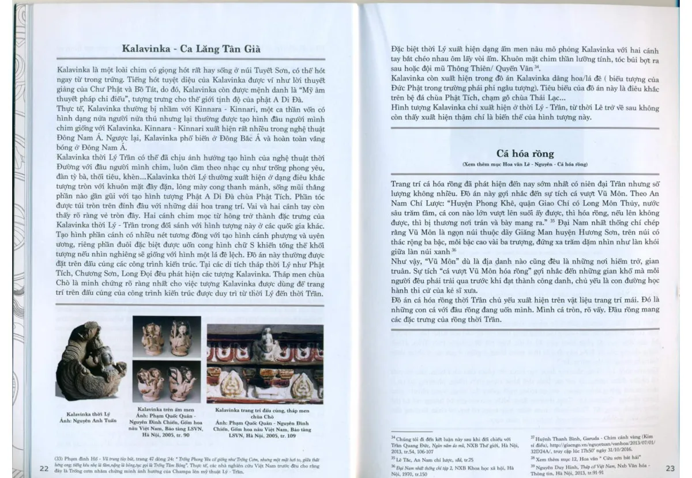
Kalavinka - Ca Lăng Tân Già
Kalavinka là một loài ¡ chim có giọng hót rất hay sống ở núi Tuyết Sơn, có thể hót sau hoặc đội mũ Thông Thiên/ Quyển Vân *,
Đức Phật trong trường phái phi ngẫu tượng). Tiêu biểu của đỏ án này là điêu khác
thuyết pháp chỉ điểu”, tượng trưng cho thế giới tịnh độ của phật A Di Đà. trên bệ đá chùa Phật Tích, chạm gỗ chùa Thái Lạc..
Thực tế, Kalavinka thường bị nhầm với Kinnara Kinnari, một ca thần vốn có
hình dạng nửa người nửa thú nhưng lại thường được tạo hình đâu người mình còn thấy xuất hiện thậm chí là biến thể của hình tượng này.
chim giống với Kalavinka. Kinnara ˆ Kinnari xuất hiện rất nhiều trong nghệ thuật
bóng ở Đông Nam Á.
Kalavinka thời Lý Tiần có thể đã chịu ảnh hưởng tạo hình của nghệ thuật thời
Cá hóa rông
Cán điểm vân TẢ - bến
tượng tròn với khuôn mặt đây đặn, lông mày cong thanh mảnh, sống mũi thẳng Trang trí cá hóa rồng đã phát hiện đến nay sớm nhất có niên đại Trần nhưng số
phần nào gần gũi với tạo hình tượng Phật A Di Đà chùa Phật Tích. Phần tóc
được túi tròn trên đỉnh đầu với những dải hoa trang trí. Vai và hai cảnh tay còn Nam Chí Lược: “Huyện Phong Khê, quận Giao Chỉ có Long Môn Thủy, nước
sâu trăm fâm, cá con nào lớn vượt lên suối ấy được, thì hóa rồng, nếu lên không
được, thì bị thương nơi trần và bày mang ra.” _ *% Đại Nam nhất thống chí chép
Tạo hình
ương, riên thác rộng ba bậc, mỗi bậc cao vài ba trượng, đứng xa trăm dặm nhìn như làn khói
lá đề lệch. Đồ án này thường được giữa lần núi xanh
ại các di tích tháp thời Lý như Phật Như vậy, “Vũ Môn” dù là địa danh nào cũng đều là những nơi hiểm trở, gian
hiện các tượng Kalavinka. Tháp men chùa
t cho việc tượng Kalavinka được dùng để trang người đều phải trải qua trước khi đạt thành công danh, chủ yếu là con đường học
trí trên đấu củng của công trình kiến trúc được duy trì từ thời Lý đến thời Trần. hành thi cử của kẻ sĩ xưa,
Đồ án cá hóa rông thời Trân chủ yếu xuất hiện trên vật liệu trang trí mái. Đó là
những con cá với đâu rồng đang uốn mình. Mình cá tròn, rõ vẩy. Đâu rồng mang
các đặc trưng của rồng thời Trần.
Kalavinka thời Lý.
Ảnh: Nguyên Anh Tuấn chùa Chờ.
Hà Nội, 2005, tr. 90`
`4 Chúng tôi đi đến kết luận này sau khi đốt chiếu với
Trần Quang Đức, Ngàn năm áo mũ, NXB Thế giới, Hà Nội,
2013, tr.54, 106-107.
n
cứu Việt Nam trước đều cho rằng
22 23
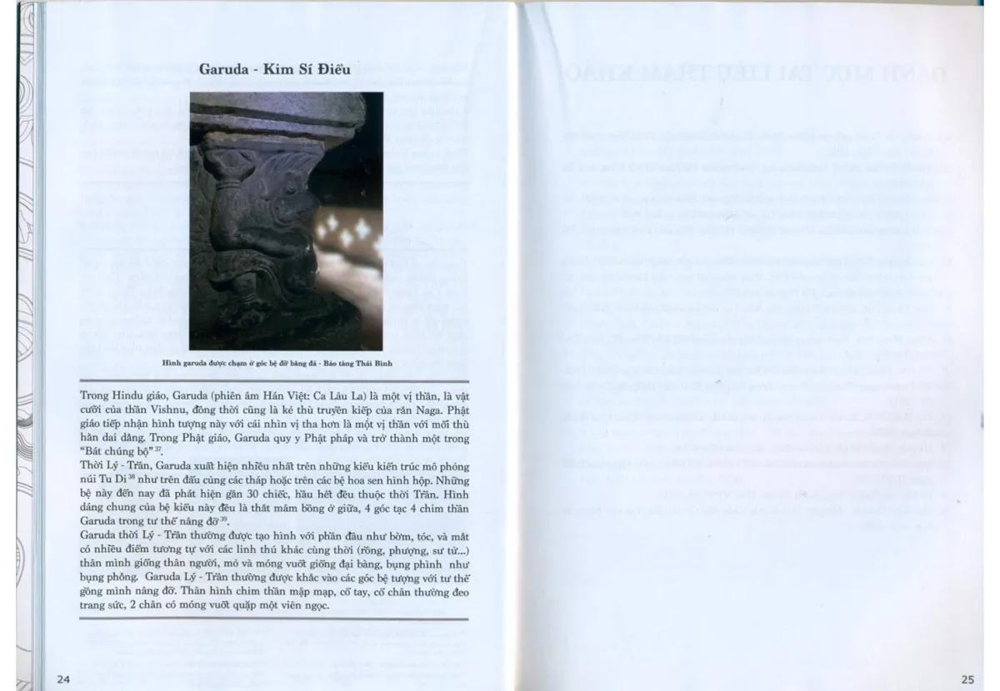
Garuda - Kim Sí Điểu
Trong Hindu giáo, Garuda (phiên âm Hán Việt: Ca Lâu La) là một vị thần, là vật
cưỡi của thần Vishnu, đồng thời cũng là kẻ thù truyền kiếp của. rần Naga. Phật
hân dai dâng. Trong Phật giáo, Garuda quy Phật pháp và trở thành một trong
“Bát chúng bộ”
bệ này đến nay đã phát hiện gần 30 chiếc, hầu hết đều thuộc thời Trần. Hình
dáng chung của bệ kiểu này. đều là mâm bồng ở 4 góc tạc 4 chim thân
Garuda trong tư thế nâng đỡ,
có nhiều điểm tương tự với các linh thú khác cùng thời (rồng, phượng, sư tử...)
thân mình giống thân. người, mỏ và mồng vuốt giống đại bàng, bụng phình như
bụng phỏng. Garuda Lý - Trần thường được khắc vào các góc bệ tượng với tư thế
trang sức, 2 chân có móng vuốt quặp một viên ngọc..
24 25
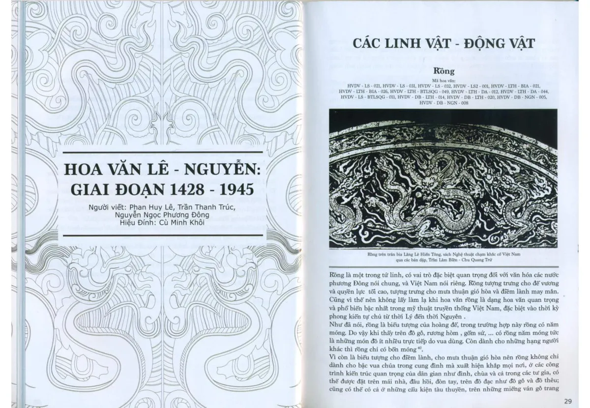
CÁC LINH VẬT - ĐÔNG VẬT
Rông
Mã hoa vă
- DB - NGN - 008.
HOA VĂN LEẼE - NGUYEN:
GLAI ĐOAN 1428 - 1945
Người viết: Phan Huy Lê, Trần Thanh Trúc,
Nguyễn Ngọc Phương Đông
Hiệu Đính: Cù Minh Khôi.
_ qua các bản đập, Trần Lãm Biền - Quang
Rồng là một trong tứ linh, có vai trò đặc biệt quan trọng đối với văn hóa các nước
phương Đông nói chung, và Việt Nam nói riêng. Rồng tượng trưng cho đế vương
và quyền lực tối Cao, tượng trưng cho mưa thuận gió hòa và điềm lành may mắn.
Cũng vì thế nên không lấy làm lạ khi hoa văn rồng là dạng hoa văn quan trọng
và phổ biến bậc nhất trong mỹ thuật truyền thống Việt Nam, đặc biệt vào thời kỳ
phong kiến tự chủ từ thời Lý đến thời Nguyễn .
Như đã nói, rồng là biểu tượng của hoàng đế, trong trường hợp này rồng có năm
móng. Do vậy khi thấy trên đồ gỗ, rương hòm š gốm SỨ, ... CỔ rồng năm móng tức
là những món đồ ít nhiều trực tiếp đo vua dùng. Còn dành cho những hạng người
Vì còn là biểu tượng cho điềm lành, cho mưa thuận gió hòa nên rồng không chỉ
dành cho bậc vua chúa trong cung đình mà xuất hiện khắp mọi nơi, ở các công
cũng có th có cả ở những cấu kiện tàu thuyền, trên những miếng ván gỗ trang
29
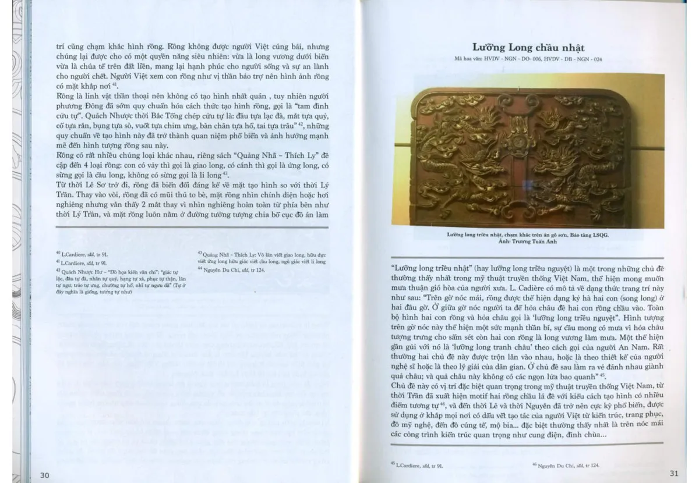
Lưỡng Long châu nhật
chúng lại được cho có một quyền năng siêu nhiên: vừa là long vương dưới biển Mã hoa văn: HVDV - NGN - DO- 006, HVDV - DB - NGN - 024
vừa là chúa tể trên đất liên, mang lại hạnh phúc cho người sống và sự an lành
cho người chết. Người Việt xem con rồng như vị thần bảo trợ nên hình ảnh rồng
phương Đông đã sớm quy chuẩn hóa cách thức tạo hình rồng, gọi là “tam đình
cửu tự”. Quách Nhược thời Bắc Tống chép cửu tự là: đâu tựa lạc đà, mắt tựa quỷ,
mẽ đến hình tượng rồng sau này.
Rông có rất nhiều chủng loại khác nhau, riêng sách “Quảng Nhã - Thích Ly” đê
cập đến 4 loại rồng: con có vảy thì gọi là giao long, có cánh thì gọi là ứng long, có
Từ thời Lê Sơ trở đi, rồng đã biến đổi đáng kế vẽ mặt tạo hình so với thời Lý
sừng gọi là cầu long, không có sừng gọi là long -
Trần. Thay vào vòi, rồng đã có mũi thú to bè, mặt rồng nhìn chính diện hoặc hơi
nghiêng nhưng vẫn thấy 2 mắt thay vì nhìn nghiêng hoàn toàn từ phía bên như
thời Lý Trân, và mặt rồng luôn nằm ở đường tưởng tượng chia bố cục đồ án làm
Lưỡng long triều nhật, chạm khác trên án gô sơn, Bảo tàng LSQG.
_Ảnh: Trương Tuấn Anh
L Cardiere, sả, tr 91.
LCardiere, tr 91. việt ứng long, hữu giác viet long, ngũ giác viết lí long
Nguyên Du Chỉ, tr 124. “Lưỡng long triều nhật” (hay lưỡng long triều nguyệt) là một trong những chủ đề
thường thấy nhất tron; ệt Nam, thể hiện mong muốn
mưa thuận gió hòa của người ›
đây nghĩa là giống, tương tự như). có mô tả về dạng thức trang trí này
ể hiện dạng kỷ hà hai con (song long) ở
hai đâu gờ. Ở giữa gờ nóc âu đề hai con rồng chầu vào. Toàn
bộ hình "hai con rồng và hỏa châu Tưỡng long triêu nguyệt”. Hình tượng
trên gờ nóc này thể hiện một sức : mạnh thân bí, sự câu
mong có mưa vì hỏa châu
tượng trưng cho sấm sét còn hai là long vương làm mưa. Một thể hiện
gần gủi với nó là 'lưỡng long eo cách gọi của người An Nam. Rất
thường hai chủ đê này được trộn lẫn \
nghệ sĩ hoặc là theo lý giải của dân gian. Ở chủ đề sau lầm ra vẻ đánh nhau giành
quả châu; và quả châu này không có các ngọn lửa bao quanh”
thời Trần đã xuất hiện motif hai rồng chầu lá đề với kiểu cách tạo hình có nhiều
sử dụng ở khắp mọi nơi có dấu vết tạo tác của người Việt từ kiến trúc, trang phục,
các công trình kiến trúc quan trọng như cung điện, chùa...
Nguyễn Du Chị, sđ4, tr 124.
30 31
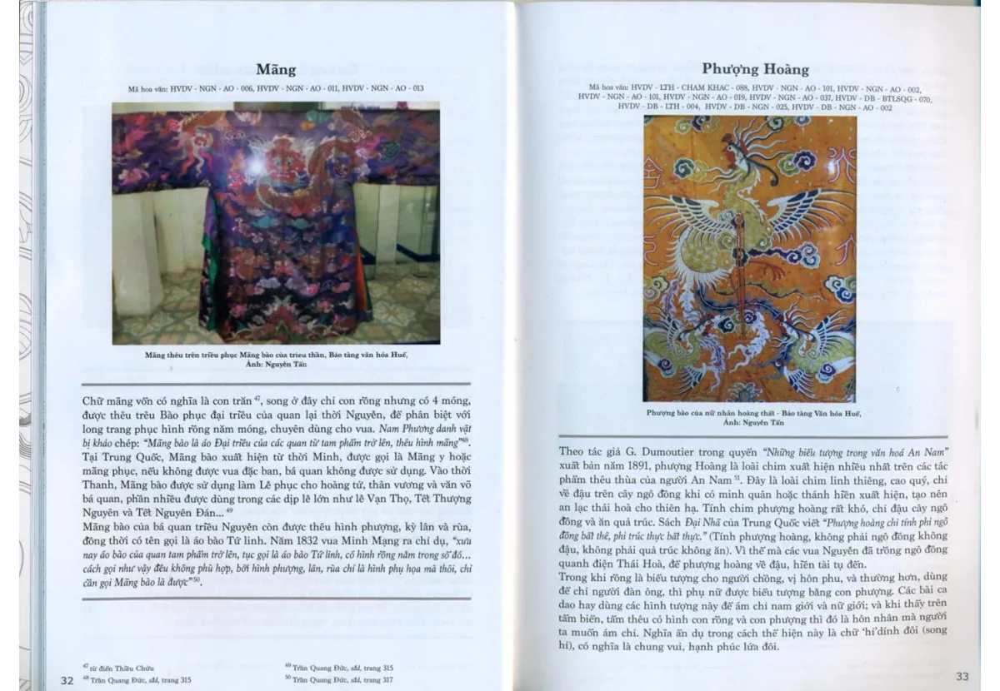
Mãng Phượng Hoàng
Mã hoa văn: HVDV - NGN - AO - 006, HVDV - NGN - AO - 011, HVDV - NGN - AO - 013
Mãng thêu trên triều phục Mãn Ảnh: Nguyễn Tấn
hóa Huế,
Chữ mãng vốn có nghĩa là con trăn “, song ở đây chỉ con rồng nhưng có móng,
được thêu trêu Bào phục đại triều của quan lại thời Nguyễn, để phân biệt với Phượng bào của nữ nhân hoàng thất - Báo tàng Văn hóa Huế,
long trang phục hình rồng năm móng, chuyên dùng cho vua. Nam Phương danh vật
Ảnh: Nguyên Tấn.
bị khảo chép: “Mãng bào là áo Đại triều của các ‹ quan từ tam phẩïm trở lên, thêu hình mãng"%.
Tại Trung. Quốc, 'Mãng "bào xuất hiện từ thời Minh, được gọi là. Mãng y hoặc Theo tác giả G. Dumoutier trong quyển “Những biểu tượng trong văn hoá An Nam”
mãng phục, nếu không được vua đặc ban, bá quan không được sử dụng. Vào thời xuất bản năm 1891, phượng Hoàng là loài chim xuất hiện nhiều nhất trên các tác
Thanh, Mãng bào được sử dụng làm Lễ phục cho hoàng tử, thân vương và văn võ
bá quan, phiần nhiều được dùng trong các dịp lẽ lớn như lẽ Vạn Thọ, Tết Thượng vê đậu trên cây ngô đồng khi có minh quân hoặc thánh hiên xuất hiện, tạo nên
Nguyên và Têt Nguyên
Mãng bào của bá quan triều Nguyễn còn được thêu hình phượng, kỳ lân và rùa,
đông thời có tên gọi là áo bào Tứ linh. Năm 1832 vua Minh Mạng ra chỉ dụ, “xưa đồng bãt thê, phi trúc thực bật thực.” (Tĩnh phượng hoàng, không phải ngô đồng không
nay áo bào của quan tam phẩm trở lên, tục gọi l áo bào Tứ linh, có hình rồng nằm trong sỡ đồ... đậu, không phải quả trúc không ăn). Vì thế mà các vua Nguyễn đã trông ngô đồng
cách gọi như vậy đều không phù hợp, bởi hình phượng, lân, rùa chỉ là hình phụ họa mà thôi, chỉ
Trong khi rồng là biểu tượt ng, vị hôn phu, và thường hơn, dùng
hì), có nghĩa là chung vui, hạnh phúc lứa đôi.
° Trần Quang Đức, trang 315
Quang Đức, trang 3I7
**Trăn Quang Đức, si, trang 315
-? In 33
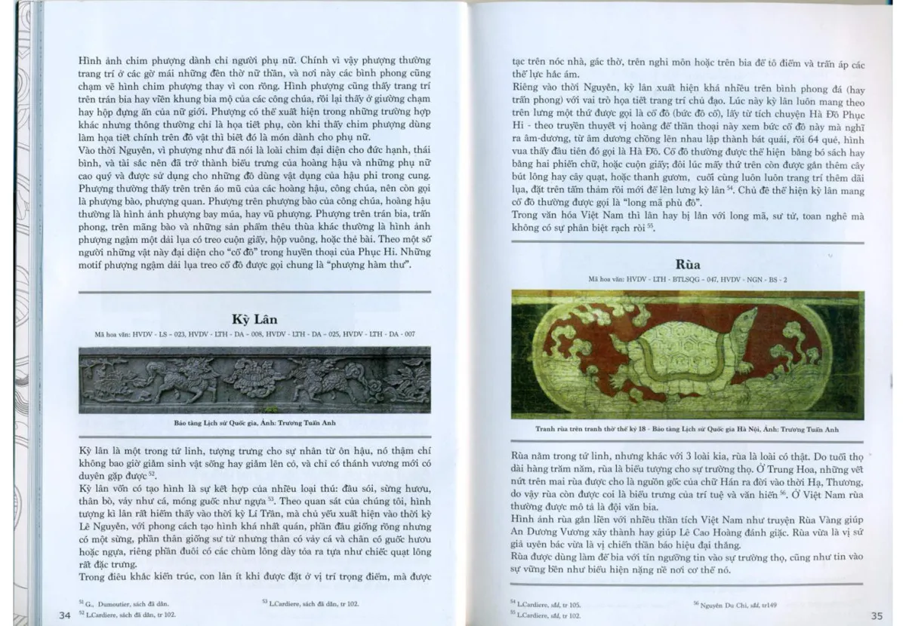
Hình ảnh chim phượng dành chỉ người phụ nữ. Chính vì vậy phượng thường gác thờ, trên nghỉ môn hoặc trên bia để tô điểm và trấn ấp các
trang trí ở các gờ mất những đền thờ nữ thần, và nơi này các bình phong cũng
chạm vẽ hình chim phượng thay vì con rồng. Hình phượng cũng thấy trang trí
thế lực hắc ám.
hay hộp đựng ấn của nữ giới. Phượng có thể xuất hiện trong những trường hợp
khác nhưng thông thường chỉ là họa tiết phụ, còn khi thấy chim phượng dùng
làm họa tiết chính trên đô vật thì biết đó là món dành cho phụ nữ.
Vào thời Nguyễn, vì phượng như đã nói là loài chim đại diện cho đức hạnh, thái vua thấy đầu tiên đó gọi là Hà Đö. Cổ đö thường được thể hiện bảng bó sách hay
bình, và tài sắc nên đã trở thành biểu trưng của hoàng hậu và những phụ nữ
cao quý và được sử dụng cho những đô dùng vật dụng của hậu phi trong cung. bút lông hay cây quạt, hoặc thanh gươm, cuối cùng luôn Tuôn trang. trí thêm dãi
Phượng thường thấy trên trên áo mũ của các hoàng hậu, công chúa, nên còn gọi
là phượng bào, phượng quan. Phượng trên phượng bào của công chúa, hoàng hậu cổ đồ thường được gỌI là “long mã phù đồ”.
thường là hình ảnh phượng bay múa, hay vũ phượng. Phượng trên trần bia, trấn Trong văn hóa Việt Nam thì lân hay bị lẫn với long mã, sư tử, toan nghê mà
không có sự phân biệt rạch ròi 5.
phượng ngậm một dải lụa có treo cuộn giấy, hộp vuông, hoặc thẻ bài. Theo một số
người những vật này đại diện cho “cổ đô” trong huyền thoại của Phục Hi. Những
motif phượng ngậm dải lụa treo cổ đồ được gọi chung là “phượng hàm thu”. Rùa
Mã hoa văn: HVDV - LTH - BTLSQG - 047, HVDV - NGN - BS - 2
Ky Lân
Mã hoa văn: HVDV - L§ - 023, HVDV - LTH - DA - 008, HVDV - LTH - DA - 025, HVDV - LTH - DA - 007
Bảo tầng Lịch sử Quốc gia, Ảnh: Trương Tuấn Anh
“Tranh rùa trên tranh thờ thế ký 18 - Bảo tầng Lịch sứ Quốc gia Hà Nội, Ảnh: Trương Tuấn Anh
Kỳ lân. là một trong tứ. linh, tượng trưng cho sự nhân từ ôn hậu, nó thậm chí
không bao giờ giãm sinh vật sống hay giãm lên cỏ, và chỉ có thánh vương mới có Rùa trong tứ linh, nhưng khác với 3 loài kia, rùa là loài có thật, Do tuổi thọ
đài hàng trăm năm, rùa là biếu tượng cho sự trường thọ. Ở Trung Hoa, những vết
Kỳ lân vốn có tạo hình là sự kết hợp của nhiều loại thú: đâu sói, sừng hươu, nứt trên Tai rùa được cho là ngưồn gốc của chữ Hán ra đời vào thời Hạ, Thương,
thân bồ, vảy như cá, mồng guốc như ngựa *, Theo quan sắt của chúng tôi, hình do vậy rùa còn được coi là biểu trưng của trí tuệ và văn hiến Ở Việt Nam rùa
tượng kì lân rất hiếm thấy vào thời kỳ Lí Trân, mà chủ yếu xuất hiện vào thời kỳ
Lê Nguyễn, với phong cách tạo hình khá nhất quần, phần đầu giống rồng nhưng An Dương Vương xây thành hay giúp Lê Cao Hoàng đánh giặc. Rùa vừa là vị sứ
hoặc ngựa, riêng phần đuôi có các chùm lông đầy tỏa ra tựa như chiếc quạt lông giả uyên bác vừa là vị chiến thần báo hiệu đại thắng.
rất đặc trưng. Rùa được dùng làm đế bia với tín ngưỡng tin vào sự trường thọ, cũng như tin vào
Trong điêu khác kiến trúc, con lân ít khi được đặt ở vị trí trọng điểm, mà được
sự vững bên như biểu hiện nặng nề nơi cơ thể nó.
¬ G., Dumoutier, sách đã dẫn. ® 1 Cardiere, sách đã dân, tr 102. ' Nguyên Du Chỉ, sử, trl49
si tr 102
34 1 Cardiere, sách đã dẫn, tr 102. 35
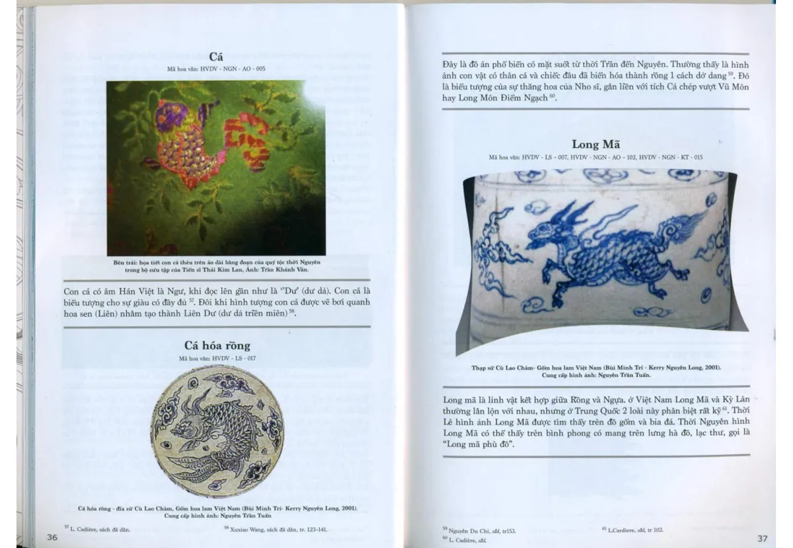
Cá
Mã hoa văn: HVDV - NGN - AO - 005 Đây là đô án phổ biến có mặt suốt từ thời Trần đến Nguyễn. Thường thấy là hình
ảnh con vật có thân cá và chiếc đâu đã biến hóa thành rồng 1 cách dở dang”. Đó
là biểu tượng của sự thăng hoa của Nho sĩ, gần liên với tích Cá chép vượt Vũ Môn
hay Long Môn Điểm Ngạch
Long Mã
Mã hoa văn: HVDV - L - 007, HVDV - NGN - AO - 102, HVPV - NGN - KT - 015
_ trong bộ sưu tập của Tiến sĩ Thái Kim Lan, Ảnh: Trần Khánh Văn.
quý tộc thời Nguyễn
Con cá có âm Hán Việt là Ngư, khi đọc lên gần như là “Dư” (dư đả). Con cá là
biểu tượng cho sự giàu có đây đủ Mộ Đôi khi hình tượng con cá được vẽ bơi quanh
hoa sen (Liên) nhâm tạo thành Liên Dư (dư đả triền miên)
Cá hóa rông
Mã hoa văn: HVDV - L§ - 017
sứ Cù Lao Chàm- Gốm hoa lam. Việt Nam (Bài I Minh Trí - Kerry Nguyễn Long, 2001).
Long mã là linh vật kết hợp giữa Rông và Ngựa. ở Việt Nam Long Mã và Kỳ Lân
thường lăn lộn với nhau, nhưng ở Trung Quốc 2 loài này phân biệt rất Thời
Long Mã có thể thấy trên bình phong có mang trên lưng hà đô, lạc thư, gọi là
“Long mã phù đô”.
*Š Xuxiao Wang, sách đã dân, tr. 123-141.
®? Cadièr Nguyên Du Chí, di, trl53.
, sách đã dân.
36 “0
6L sđd, tr 102,
37
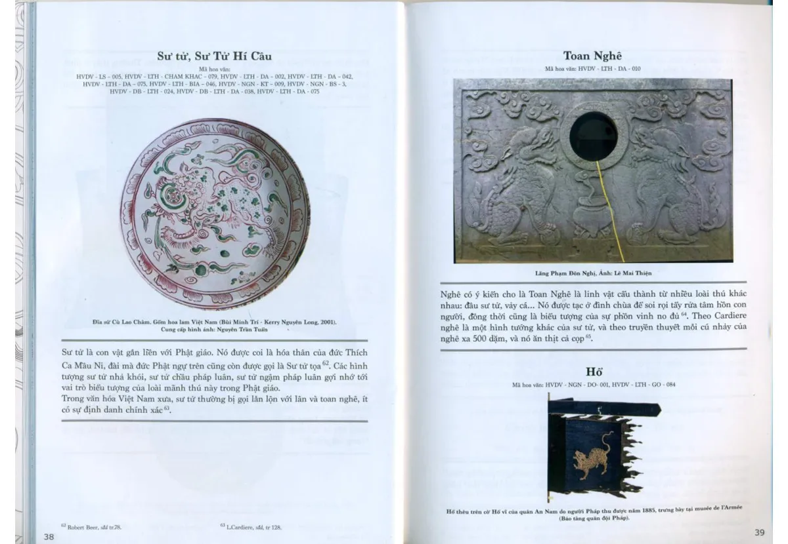
Sư tử, Sư Tử Hí Câu Toan Nghê
Mã hoa văn: HVDV - LTH - DA - 010
_ HVDV - DB - LTH - 024, HVDV - DB - LTH - DA - 088, HVDV - LTH - DA - 075.
Lăng Phạm Đôn Nghị, Ảnh: Lê Mai Thiện
Nghê có ý kiến cho là Toan Nghê là linh vật cấu thành từ nhiều loài thú khác
nhau: đầu sư tử, vảy cá... Nó được tạc ở đình chùa để soi rọi tẩy rửa tâm hồn con
người, đông thời cũng là biểu tượng của sự phồn vinh no đủ Theo Cardiere
_Cung cấp hình ảnh: Nguyên Trân Tuấn.
nghê xa 500 đặm, và nó ăn thịt cả cọp 6,
Sư tử là con vật gắn liên với Phật giáo. Nó được coi là hóa thân của đức Thích
Ca Mâầu Ni, đài mà đức Phật ngự trên cũng còn được gọi là Sư tử tọa Các hình
tượng sư tử nhả khói, sư tử pháp luân, sư tử ngậm pháp luân gợi nhớ tới
Hổ
vai trò biểu tượng của loài mãnh thú này trong Phật giáo. Mã hoa văn: HVDV - NGN - DO- 001, HVDV - - GO - 084
có sự định danh chính xác ®,
Hỗ thêu trên cờ Hố vĩ của quân An Nam do người. Pháp thủ được năm 1885, trưng bày tại mus4
52 Beer, sđd tr7R. ®3 | Cardiere, sđá, tr 128.
_(Báo tàng quân đội Pháp).
39
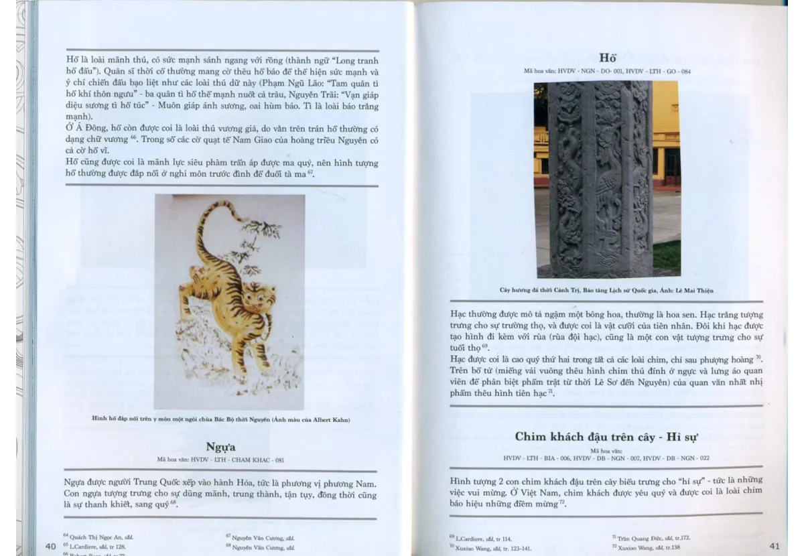
Hổ
Mã hoa văn: HVDV - NGN - DO- 001, HVDV - LTH - GO - 084
Ở Á Đông, hổ còn được coi Tà loài thú vương giả, đo vẫn trên trán hổ thường có
dạng chữ vương = Trong SỐ các cờ quạt tế Nam Giao của hoàng triều Nguyễn có
cả cờ hổ Vĩ.
Hồ cũng được coi là mãnh lực siêu phàm trấn ấp được ma quỷ, nên hình tượng
hổ thường được đắp nổi ở nghỉ môn trước đình để đuổi tàma
Cây hương đá thời Cảnh Trị, Báo tầng Lịch sử Quốc gia, Ảnh: Lê Mai Thiện
Hạc thường được mô tả ngậm một bông hoa, thường là hoa sen. Hạc trắng tượng
trưng cho sự trường thọ, và được coi là vật cưỡi của tiên nhân. Đôi khi hạc được
tạo hình đi kèm với rùa (rùa đội hạc), cũng là một con vật tượng trưng cho sự
tuổi thọ ®9.
Hạc được coi là cao quý thứ hai trong tât cả các loài chim, chỉ sau phượng hoàng ”.
viên để phân biệt phẩm trật. từ thời Lê Sơ đến Nguyễn) của quan văn nhất nhị
phẩm thêu hình tiên hạc
Hình hố đắp r Bộ thời Nguyễn (Ảnh màu của Albert Kahn)
Ngựa
Chim khách đậu trên cây - Hi sự
Mã hoa văn: HVDV - LTH - CHAM KHAC - 081
Mã hoa văn:
Ngựa được người Trung Quốc xếp vào hành Hỏa, tức là phương vị phương Nam. Hình tượng 2 con chim khách đậu trên cây biểu trưng cho “hỉ sự” - tức là những
Con ngựa tượng trưng cho sự đũng mãnh, trung thành, tận tụy, đông thời cũng việc vui mừng. Ở Việt Nam, chỉm khách được yêu quý và được coi là loài chim
là sự thanh khiết, sang quý ®, báo hiệu những điềm mừng”,
Quách Thị Ngọc An, si. Nguyễn Văn di,
40 Xuxiao tr138 41
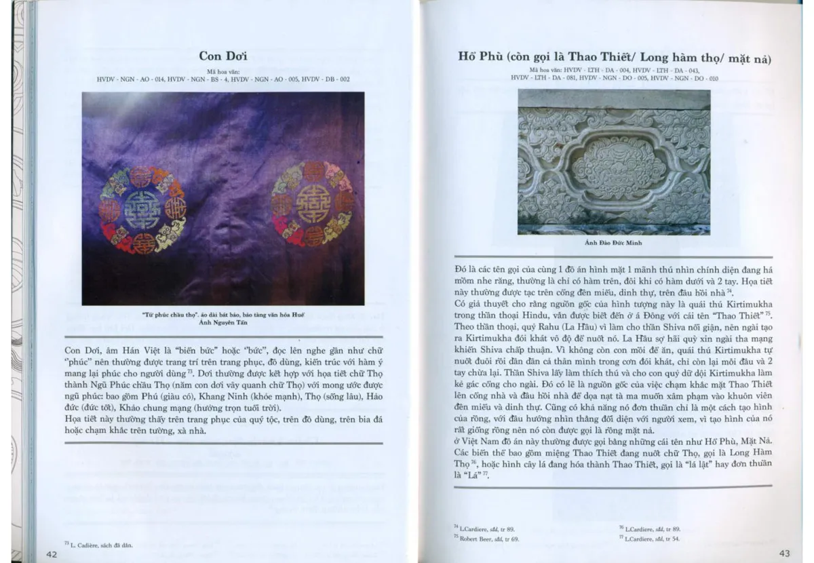
Con Dơi
Mã hoa văn: HVDV - LTH - DA - 081, HVDV - NGN - DO - 005, HVDV - NGN - DO - 010
HVDV - NGN - AO - 014, HVDV - NGN - BS - 4, HVDV - NGN - AO - 005, HVDV - DB - 002
Ảnh Đào Đức Minh
Đó là các tên gọi của cùng l đồ án hình mặt 1 mãnh thú nhìn chính diện đang há
mồm nhe răng, thường là chỉ có hàm trên, đôi khi có hàm dưới và 2 tay. Họa tiết
này thường được tạc trên cổng đên miếu, dinh thự, trên đâu hồi nhà là
“Tứ phúc châu thợ”. áo dài bát báo, bảo tầng văn hóa Huế
Ảnh Nguyễn Tấn
trong thần thoại Hindu, vẫn được biết đến ở á Đông với cái tên “Thao Thiết” ”.
Theo thần thoại, quỷ Rahu (La Hầu) vì làm cho thần Shiva nối giận, nên ngài tạo
ra Kirtimukha đói khát vô độ để nuốt nó. La Hâu sợ hãi quỳ xin ngài tha mạng
Con Dơi, âm Hán Việt là “biển bức” hoặc “bức”, đọc lên nghe gân như chữ khiến Shiva chấp thuận để ăn, quái thú Kirtimukha tự
“phúc” nên thường được trang trí trên trang phục, đô dùng, kiến trúc với hàm ý nuốt đuôi rồi đân đân cả thân đói khát, chỉ còn lại mỗi đâu và 2
mang lại phúc cho người dùng Dơi thường được kết hợp với họa tiết chữ Thọ tay chừa lại đữ đội Kirtimukha làm
thành Ngũ Phúc chầu Thọ (năm con đơi vây quanh chữ Thọ) với mong ước được việc chạm khắc mặt Thao Thiết
ngũ phúc: bao gôm Phú (giàu có), Khang Ninh (khỏe mạnh), "Thọ (sống lâu), Hảo lên cổng nhà :
đức (đức tốt), Khảo chung mạng (hưởng trọn tuổi trời).
ì xâm phạm vào khuôn viên
đên miếu và dinh thự. ' đơn thưần chỉ là một cách tạo hình
Họa tiết này thường thấy trên trang phục của quý tộc, trên đô dùng, trên bia đá
hoặc chạm khắc trên tường, xà nhà. rất giống rồng nên nó còn được gọi là rồng mặt nả.
ở Việt Nam đồ án này thường được gọi bằng những cái tên như Hổ Phù, Mặt Nà.
Thọ *, hoặc hình cây lá đang hóa thành Thao Thiết, gọi là “lá lật” hay đơn
là “Lá” 7,
78 tr 89,
1, Cadière, sách đã dân.
T? 1 Cardiere, sđd, tr 54.
42 43
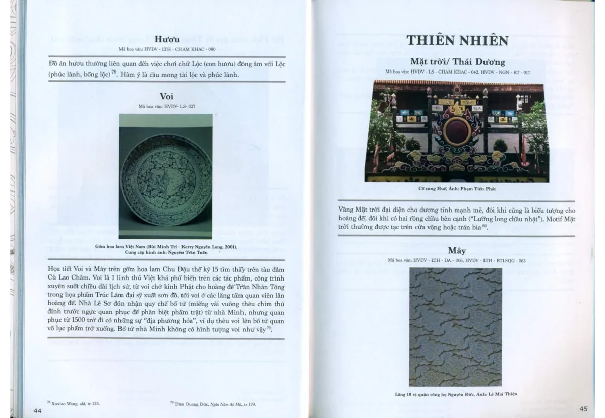
Hươu THIÊN NHIÊN
Mã hoa văn: HVDV - LTH - CHAM KHAC - 080
Đô án hươu thường liên quan đến việc chơi chữ Lộc (con hươu) đông âm với Lộc Mặt trời/ Thái Dương
(phúc lành, bổng lộc) Hàm ý là câu mong tài lộc và phúc lành. Mã hoa văn: HVDV - L§ - CHAM KHAC - 042, HVDV - NGN - KT - 017
Voi
Mã hoa văn: HVDV- 027
Cố cung Huế, Ảnh: Phạm Tiến Phát
Vâng Mặt trời đại diện cho dương tính mạnh mẽ, đôi khi cũng là biểu tượng cho
hoàng đế, đôi khi có hai rồng chiầu bên cạnh (*“Lưỡng long chầu nhật”). Motif Mặt
trời thường được tạc trên cửa võng hoặc trán bia ®9,
Cung cấp hình ảnh: Nguyên Trần Tuấn. Mây
Mã hoa văn: HVDV - LTH - DA - 006, HVDV - LTH - BTLSQG - 063
Họa tiết Voi và Mây trên gốm hoa lam Chu Đậu thế kỷ l5 tìm thấy trên tàu đắm
Cù Lao Chàm. Voi là 1 linh thú Việt khá phổ biến trên các tác phẩm, công trình
xuyên suốt chiêu đài lịch sử, từ voi chở kinh Phật cho hoàng đế Trân Nhân Tông
trong họa phẩm Trúc Lâm đại sỹ xuất sơn đồ, tới voi ở các lăng tẩm quan viên lăn
phục từ 1500 trở đi có những sự °địa phương hóa”, ví dụ thêu voi lên bổ tử quan
võ lục phẩm trở xuống. Bổ tử nhà Minh không có hình tượng voi như vậy ®,
Lăng 18 vị quận công họ Nguyễn Đức, Ảnh: Lê Mai Thiện
Quang Đức, Ngắn Năm A6 Mũ, tr 179.
44 45
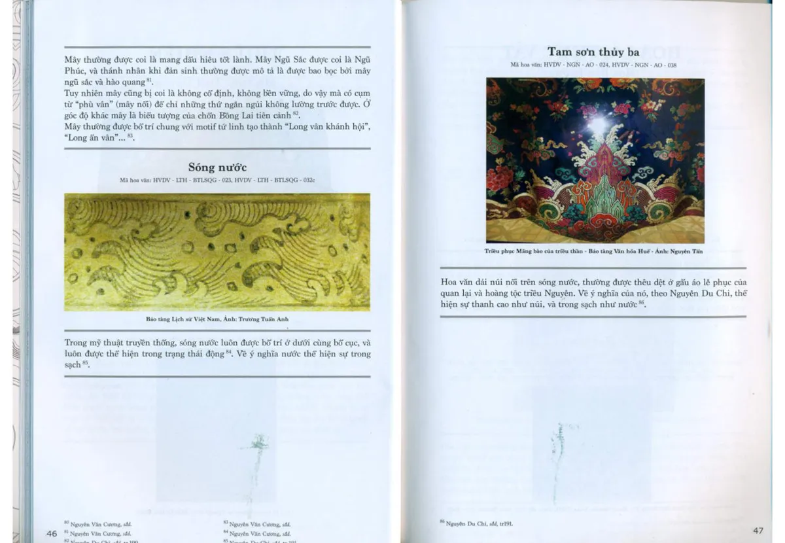
Tam sơn thủy ba
Phúc, và thánh nhân khi đản sinh thường được mô tả là được bao bọc bởi mây Mã hoa văn: HVDV - NGN - AO - 024, HVDV - NGN - AO - 038
ngũ sắc và hào quang
từ “phù vân” (mây nổi) để chỉ những thứ ngắn ngủi không lường trước được. Ở
gÓC độ khác mây là biểu tượng của chốn Bông Lai tiên cảnh
Mây thường được bố trí chung với motif tứ linh tạo thành “Long vân khánh hội”,
“Long ẩn vân”...
Sóng nước
Mã hoa văn: HVDV - LTH - BTLSQG - 023, HVDV - LTH - BTLSQG - 032c
Triều phục Mãng bào của triều thần - Bảo tàng Văn hóa Huế - Ảnh: Nguyên Tấn
Hoa văn dải núi nổi trên sóng nước, thường được thêu dệt ở gấu áo lễ phục của
quan lại và hoàng tộc triều Nguyễn. Vẽ ý nghĩa của nó, theo Nguyễn Du Chi, thể
hiện sự thanh cao như núi, và trong sạch như nước 59,
Báo tàng Lịch sử Việt Nam, Ảnh: Trương Tuấn Anh
Trong mỹ thuật truyền thống, sóng nước luôn được bố trí ở dưới cùng bố cục, và
®® Nguyên Văn Cương, Nguyên Văn Cương, sđd.
®6 Nguyên Du Chị, s4, trl91.
46 7 47
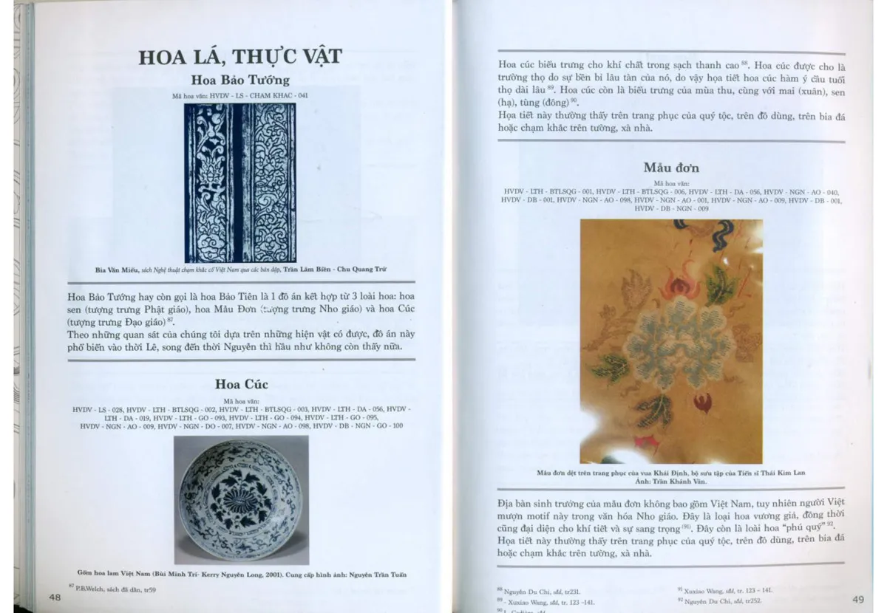
HOA LÁ, THỰC VẬT
Hoa Bảo Tướng
Mã hoa văn: HVDV - LR - CHAM - 041 (hạ), tùng (đông) xã
Họa tiết này thường thấy trên trang phục của quý tộc, trên đô dùng, trên bia đá
hoặc chạm khắc trên tường, xà nhà.
Mẫu đơn
_Mã hoa văn: -
HVDV - DB - 001, HVDV - NGN - AO - 098, HVDV - NGN - AO - 001, HVDV - NGN - AO - 009, HVDV - DB - 001,
_HVDV - DB - NGN - 009.
Bia Văn Miếu, sách Nghệ thuật chạm khắc cớ Việt Nam qua các bản đập, Trân Lâm Biên - Chu Quang
Hoa Bảo Tướng hay còn gọi là hoa Bảo Tiên là I đô án kết hợp từ 3 loài hoa: hoa
sen (tượng trưng Phật giáo), hoa Mẫu Đơn (tượng trưng Nho giáo) và hoa Cúc
(tượng trưng Đạo giáo) 8,
Theo những quan sát của chúng tôi dựa trên những hiện vật có được, đồ án này
phổ biến vào thời Lê, song đến thời Nguyễn thì hầu như không còn thấy nữa.
Hoa Cúc
HVDV - LS - 028, HVDV - LTH - BTLSQG - 002, DV - TH - B TLSQG - 003, HVDV - LTH - DA - 056, HVDV -
HVDV - NGN - AO - 009, HVDV - NGN - DO - 007, HVDV - NGN - AO - 098, HVDV - DB - NGN - GO - 100
Mẫu đơn dệt trên trang phục của vua Khái Định, bộ sưu tập của Tiến sĩ Thái Kim Lan
_Ảnh: Trân Khánh Văn.
hoặc chạm khắc trên tường, xà nhà.
°? P.BAWelch, sách đã dân, tr59
, 2001). Cung cấp hình ảnh: Nguyễn Trần Tuấn
Nguyên Du Chi, 4đ, tr231.
48
9Ì Xuxiao Wang, sđi, tr. 123 ~ 141.
49
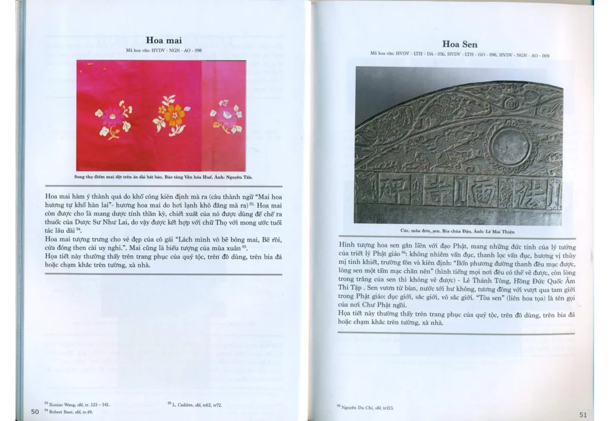
Hoa mai
Hoa Sen
Mã hoa văn: HVDV - NGN - AO - 098 Mã hoa văn: HVDV - LTH - DA - 056, HVDV - LTH - GO - 096, HVDV - NGN - AO - 009
Hoa mai hàm ý thành quả do khổ công kiên định mà ra (câu thành ngữ “Mai hoa
hương tự khổ hàn lai”- hương hoa mai do hơi lạnh khô đắng mà Hoa mai
còn được cho là mang dược tính thần kỳ, chiết xuất của nó được dùng để chế ra
thuốc của Dược Sư Như Lai, do vậy được kết hợp với chữ Thọ với mong ước tuổi
tác lâu dài Cúc, mâu đơn, sen. Bia chùa Đậu, Ảnh: Lê Mai Thiện
Hoa mai tượng trưng cho vẻ đẹp của cô gái “Lách mình vô bẽ bông mai, Bẽ rồi,
cửa đóng then cài uy nghỉ.”. Mai cũng là biểu tượng của mùa xuân Hình tượng hoa sen gắn liên với đạo Phật, mang những đức tính của lý tưởng
Họa tiết này thường thấy trên trang phục của quý tộc, trên đô dùng, trên bia đá
hoặc chạm khắc trên tường, xà nhà.
trong Phật giáo: dục giới, sắc giới, vô sắc giới. “Tòa sen” (liên hoa tọa) là tên gọi
này thường thấy trên. trang phục của quý tộc, trên đô dùng, trên bia đá
hoặc chạm khắc trên tường, xà nhà,
*® L_ Cadière, sđd, tr62, tr72.
50 *°Robert Beer, s, tr49, Nguyên Du Chỉ, sđd, tr213.
51
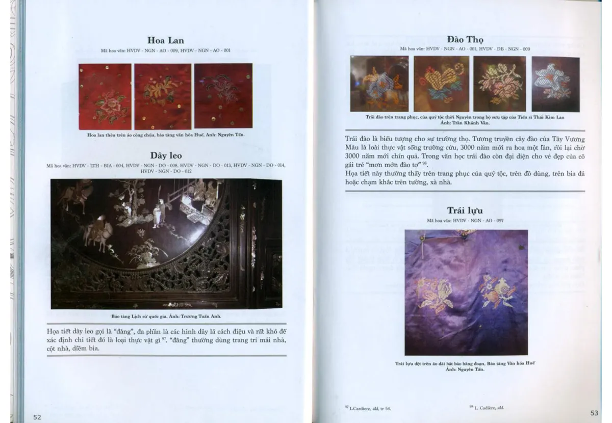
Hoa Lan Đào Thọ
Mã hoa văn: HVDV - NGN - AO - 009, HVDV - NGN - AO - 001 Mã hoa văn: HVDV - NGN - AO - 001, HVDV - DB - NGN - 009
“Trái đào trên trang phục, của quý tộc thời Nguyễn trong bộ sưu tập của Tiến sĩ Thái Kim.
Ảnh: Trân Khánh Vân.
Hoa lan thêu trên áo công chúa, bảo tầng văn hóa Huế, Anh: Nguyễn Tấn.
Trái đào là biểu tượng cho sự trường thọ. Tương truyền cây đào của "Tây Vương
Dây leo
Mẫu là loài thực vật sống trường cửu, 3000 năm mới ra hoa một Tân, rồi lại chờ
3000 năm mới chín quả. Trong văn học trái đào còn đại diện cho vẻ đẹp của cô
Mã hoa văn: HVDV - LTH - BIA - 604, HVDV - NGN - DO - 008, HVDV - NGN - DO - 013, HVDV - NGN - DO - 014,
HVDV - NGN - DO - 012 gái trẻ “mơn mớn đào
Họa tiết này thường thấy trên trang phục của quý tộc, trên đô dùng, trên bia đá
hoặc chạm khác trên tường, xà nhà.
Trái lựu
Mã hoa văn: HVDV - NGN - AO - 097
Bảo tầng Lịch sử quốc gia, Ảnh: Trương Tuấn Anh.
Họa tiết dây leo gọi là “đảng”, đa phân là các hình đây lá cách điệu và rất khó để
cột nhà, diềm bia.
Nguyễn Tấn.
Cadière, sđi.
52
53
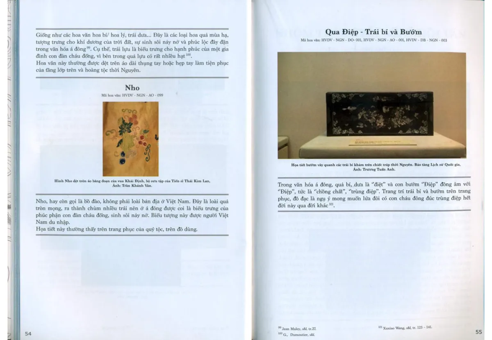
Giống như các hoa văn hoa bí/ hoa lý, trái dưa... Đây là các loại hoa quả mùa hạ, Qua Điệp - Trái bí và Bướm
tượng trưng cho khí dương của trời đất, sự sinh sôi nảy nở và phúc lộc đây đặn Mã hoa văn; HVDV - NGN - DO- 001, HVDV - NGN - AO - 001, HVDV - DB - NGN - 003
đình con đàn cháu đống, vì bên trong quả lựu có rất nhiêu hạt 100,
Hoa văn này thường được đệt trên áo dài thụng tay hoặc hẹp tay làm tiện phục
của fâng lớp trên và hoàng tộc thời Nguyễn.
Nho
Mã hoa văn: HVDV - NGN - AO - 099
Họa tiết bướm vây quanh các trái bí khám n trên ‹ chiếc trấp thời Nguyên. Báo tầng Lịch sử Quốc gia,
Ảnh: Trương Tuấn Anh.
Hình Nho dệt trên áo bằng đoạn của vua Khải Định, bộ sưu tập của Tiến sĩ Thái Kim Lan,
Ảnh: Trần Khánh Văn.
Nho, hay còn gọi là bồ đào, không phải loài bản địa ở Việt Nam. Đây là loài quả
tròn mọng, ra thành chùm nhiều trái nên ở á đông được coi là biểu trưng của đời này qua đời khác !9!,
Họa tiết này thường thấy trên trang phục của quý tộc, trên đô dùng.
#9 Jean Maley, tr.27. lô Xuxiao Wang, sđd, tr. 123 ~ 141.
54 55
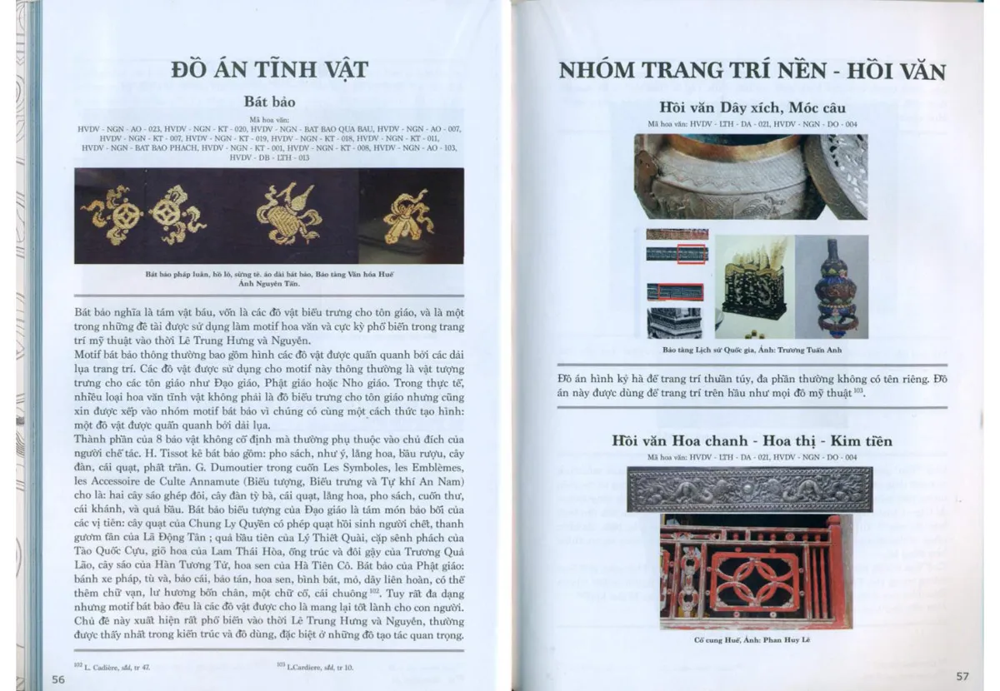
ĐỒ ÁN TĨNH VẬT NHÓM TRANG TRÍ NỀN - HỒI VĂN
Bát bảo
Hồi văn Dây xích, Móc câu
Mã hoa văn: HVDV - LTH - DA - 021, HVDV - NGN - DO - 004
HVDV - NGN - BAT BAO PHACH, HVDV - NGN - KT - 001, HVDV - NGN - KT - 008, HVDV - NGN - AO - 103,
HVDV - DB - LTH - 013
_Ảnh Nguyễn Tấn.
Bát bảo nghĩa là tám vật báu, vốn là các đô vật biểu trưng cho tôn giáo, và là một
trong những đề tài được sử dụng làm motif hoa văn và cực kỳ phổ biến trong trang
trí mỹ thuật vào thời Lê Trung Hưng và Nguyễn.
Motif bát bảo thôn ng thường bao gôm hình các đô vật được quấn quanh bởi các dải Bảo tầng Lịch sử Quốc gia, Ảnh: Trương Tuấn Anh
; cho motif này thông thường là vật tượng
„ Phật giáo hoặc Nho giáo. Trong thực tế,
trưng cho
Đô án hình kỷ hà để trang trí thưần túy, đa phần thường không có tên riêng. Đồ
\g phải là đô biểu trưng cho tôn giáo nhưng cũng
án này được dùng để trang trí trên hầu như mọi đô mỹ thuật
xin được vì chúng có cùng một cách thức tạo hình:
Thành phần của 8 bảo vật không cố định mà thường phụ thuộc vào chủ đích của Hồi văn Hoa chanh - Hoa thị - Kim tiên
người chế tác. H. 'Tissot kê bát bảo gồm: pho sách, như ý, lãng hoa, bâu rượu, cây
đàn, cái quạt, phất trần. G. Dumoutier trong cuốn Les Symboles, les Emblèmes, Mã hoa văn: HVDV - LTH - DA - 021, HVDV - NGN - DO - 004
e (Biểu tượng, Biểu trưng và Tự khí An Nam)
cho là: hai cây s
ng của Đạo giáo là tám món bảo bối của
phép quạt hồi sinh người chết, thanh
gươm tần của Lã Động Tân Lý Thiết Quài, cặp sênh phách của
Tào Quốc Cựu, giõ ho. ống trúc và đôi gậy của Trương Quả
Lão, cây sáo của . Tiên Cô. Bát bảo của Phật giáo:
bánh xe pháp, tù và, nỏ, dây liên hoàn, có thể
chuông Tuy rất đa dạng
Chủ đề này xuất hiện rất phổ biến vào thời Lê Trung Hưng và Nguyễn, thường
nhưng motif bát bảo đều.
được thấy nhất trong kiến trúc và đô dùng, đặc biệt ở những đồ tạo tác quan trọng, Cố cung Huế, Ảnh:
1 Cardiere, tr 10.
56 57
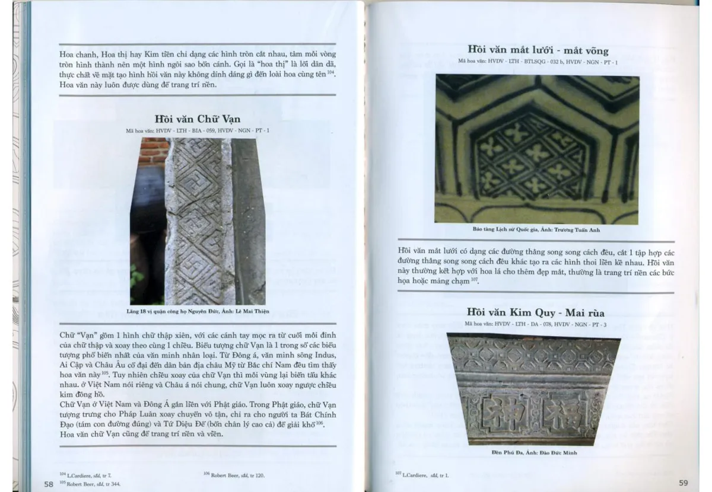
Hoa chanh, Hoa thị hay Kim tiền chỉ dạng các hình tròn cất nhau, tâm mỗi vòng Hồi văn mắt lưới - mắt võng
tròn hình thành nên một hình ngôi sao bốn cánh. Gọi là “hoa thị” là lối dân dã, Mã hoa văn: HVDV - LTH - BTLSQG - 032 b, HVDV - NGN - PT - I
thực chất về mặt tạo hình hồi văn này không dính dáng gì đến loài hoa cùng tên '*,
Hoa văn này luôn được dùng để trang trí nền.
Hồi văn Chữ Vạn
Mã hoa văn: HVDV - LTH - BIA - 059, HVDV - NGN - PT -
Bảo tăng Lịch sử Quốc gia, Ảnh: Trương Tuấn Anh
Hồi văn mắt lưới có dạng các đường thẳng song song cách đều, cắt 1 tập hợp các
đường thâng song song cách đều khác tạo ra các hình thoi liên hhau, Hồi
này thường kết hợp với hoa lá cho thêm đẹp mắt, thường là trang trí rền các bức
họa hoặc mảng chạm
Lăng 18 vị quận công họ Nguyễn Đức, Ảnh: Lê Mai Thiện Hồi văn Kim Quy - Mai rùa
Mã hoa văn: HVDV - LTH - DA - 078, HVDV - NGN - PT - 3
Chữ “Vạn” gồm 1 hình chữ thập xiên, với các cánh tay mọc ra từ cuối mỗi đỉnh
của chữ thập và xoay theo cùng 1 chiều. Biểu tượng chữ Vạn là 1 trong số các biểu
tượng phổ biến nhất của văn minh nhân loại. Từ Đông ắ, văn mỉnh sông Indus,
Ai Cập và Châu Âu cổ đại đến dân bản địa châu Mỹ từ Bắc chí Nam đều tìm thấy
hoa văn này !%, Tuy nhiên chiều xoay của chữ Vạn thì mỗi vùng lại biến tấu khác
nhau. ở Việt Nam nồi riêng và Châu á nối chung, chữ Vạn luôn xoay ngược chiêu
kim đông hồ.
Chữ Vạn ở Việt Nam và Đông Á gắn liên với Phật giáo. Trong Phật giáo, chữ Vạn
tượng trưng cho Pháp Luân xoay chuyển vô tận, chỉ ra cho người ta Bát Chính
Đạo (tám con đường đúng) và Tứ Diệu Đế (bốn chân lý cao cả) để giải khổ 16,
Hoa văn chữ Vạn cũng để trang trí riền và viên.
Đền Phú Đa, Ảnh: Đào Đức Minh
196 Beer, tr 120, Cardiere, sđ4, tr 1.
58 _ Rober+ Beer, sđd, tr 344. 59
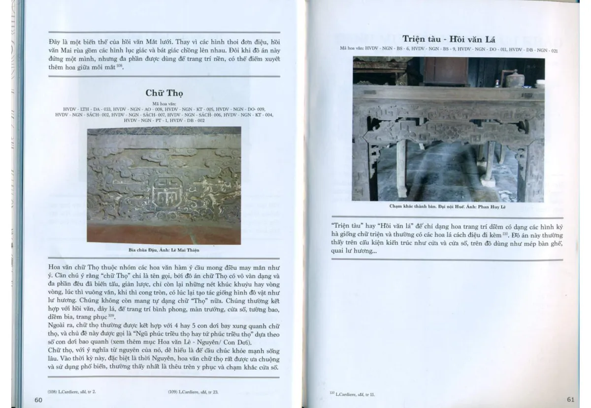
Đây là một biến thể của hồi văn Mắt lưới. Thay vì các hình thoi đơn điệu, hồi Triện tàu - Hồi văn Lá
văn Mai rùa gồm các hình lục giác và bát giác chồng lên nhau. Đôi khi đồ án này Mã hoa văn: HVDV - NGN - BŠ - 6, HVDV - NGN - BS - 9, HVDV - NGN - DO - 0II, HVDV - DB - NGN - 0
đứng một mình, nhưng đa phần được dùng để trang trí nền, có thể điểm xuyết
thêm hoa giữa mỗi mắt !%,
Chữ Thọ
_ Mã hoa văn:.
_HVDV - NGN - PT - l, HVDV - DB - 002.
Chạm khác thành bản. Đại nội Huế. Ảnh: Phan Huy Lê
“Triện tàu” hay “Hồi văn lá” để chỉ dạng hoa trang trí diềm có dạng các hình kỷ
hà giống chữ triện và thường có các hoa lá cách điệu đi kèm 19, Đồ án này thường
thấy trên cấu kiện kiến trúc như cửa và cửa sổ, trên đồ dùng như mép bàn ghế,
Bia chùa Đậu, Ảnh: Lê Mai Thiện quai lư hương...
Hoa văn chữ Thọ thuộc : nhóm các hoa văn hàm ý cầu mong điều may mắn như
đa phần đều đã biến tấu, giản lược, chỉ còn lại những nét khúc khuỷu hay vòng
vòng, lúc thì vuông vẫn, khi thì cong tròn, có lúc lại tạo tác giống hình đô vật như
hợp với hồi văn, dây lá, để trang trí bình phong, màn trướng, cửa sổ, tường bao,
diêm bia, trang. phục »
Ngoài ra, chữ thọ thường được kết hợp với 4+ hay 5 con dơi bay xung quanh chữ
thọ, và chủ đê này được gọi là “Ngũ phúc triều thọ hay tứ phúc triều thọ” dựa theo
Chữ thọ, với LÁ nghĩa từ nguyên của nó, để hiểu là để cầu chúc khỏe mạnh Sống
và sử dụng phổ biến, thường thấy nhất là thêu trên y phục và chạm khắc cửa số.
(108) L.Cardiere, sđd, tr 2. (109) LCardiere, sđd, tr 23.
60
tr 11.
61
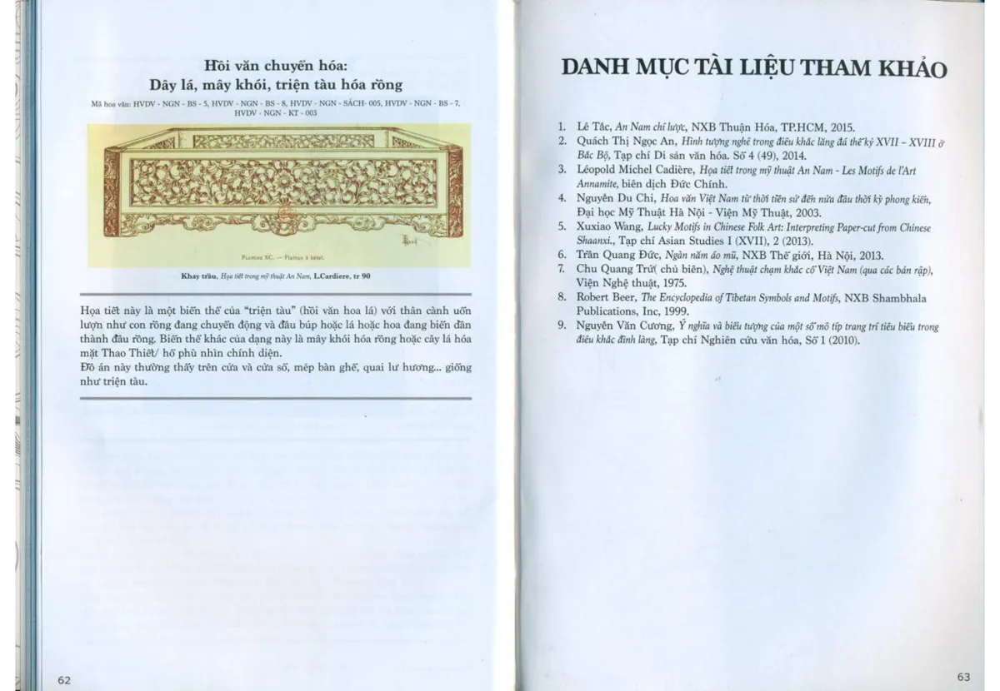
Hồi văn chuyển hóa: DANH MỤC TÀI LIỆU THAM KHẢO
Dây lá, mây khối, triện tàu hóa rông
Mã hoa văn: HVDV - NGN - BS§ - 5, HVDV - NGN - BS - 8, HVDV -
NGN - SÁCH- 005, HVDV - NGN - BS - ï,
_HVDV -NGN - KT - 003.
1, Lê Tắc, An Nam chí lược, ÑXB Thuận Hóa, TP.HCM, 2015.
Quách Thị Ngọc An, Hình tượng nghệ trong điều khắc lăng đá thế kỷ XVII - XVIII ở
Bắc Bộ, Tạp chí Di sản văn hóa. Số 4 (49), 2014.
Léopold Michel Cadière, Họa tiết trong mỹ thuật An Nam - Les Motifs de Art
Anmnamite, biên dịch Đức Chính.
Đại học Mỹ Thuật Hà Nội - Viện Mỹ Thuật, 2003.
% Xuxiao Wang, Moijt in Chinese Folk Art: Paper-cut from Chinese
Shaanxi., Tạp chí Asian Studies I (XVII), 2 (2013).
Trân Quang Đức, Ngàn năm áo mũ, NXB Thế giới, Hà Nội, 2013.
Khay trầu, Họa tiết trong mỹ thuật An Nam, L.Cardiere, tr 90
Viện Nghệ thuật, 1975.
Robert Beer, The Encyclopedia 0ƒ Tibetan Symbols and Moti§, NXB Shambhala
Họa tiết này là một biến thể của “triện tàu” (hồi văn hoa lá) với thân cành uốn Publications, Inc, 1999.
lượn như con rồng đang chuyển động và đâu búp hoặc lá hoặc hoa đang biến đân
thành đầu rồng. Biến thể khác của dạng này là mây khói hóa rồng hoặc cây lá hóa điêu khắc đình làng, Tạp chí Nghiên cứu văn hóa, Số 1 (2010).
mặt Thao Thiết/ hổ phù nhìn chính điện.
Đồ án này thường thấy trên cửa và cửa sổ, mép bàn ghế, quai lư hương... giống
như triện tàu.
s2 63